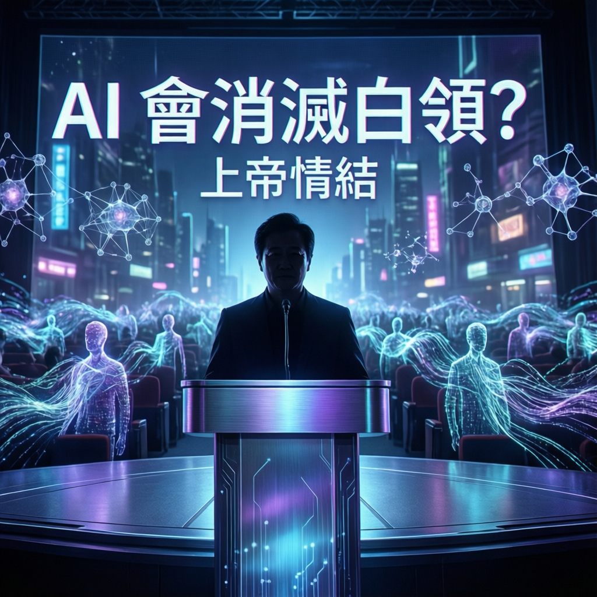

NVIDIA 執行長黃仁勳直指 AI 取代人類論述背後的管理迷思，揭示企業領導者對自動化的認知偏差與權力焦慮

本次報告聚焦 NVIDIA 執行長黃仁勳針對「AI 將消滅白領工作」論述的公開回應。研究指出，黃仁勳認為此類說法本質上反映了企業管理層的「上帝情結」——一種渴望透過技術手段掌控員工、重塑組織的權力慾望，而非對自動化技術的客觀評估。
專家分析表示，黃仁勳的觀點挑戰了當前科技圈的主流敘事，將討論焦點從「技術能否取代人類」轉向「誰在推動取代敘事以及其背後動機」。數據顯示，類似的管理焦慮在企業數位轉型過程中屢見不鮮。
業界觀察指出，「上帝情結」一詞精準捕捉了部分企業領導者的心態特徵。這類管理者傾向將 AI 視為實現組織「完美控制」的工具，幻想透過演算法消除人為的不確定性與低效。然而，研究強調，此種思維往往忽略了知識工作的本質價值——創造力、判斷力與人際協作。
作為全球 AI 晶片龍頭的領導者，黃仁勳的立場格外引人注目。本次報告分析，其論述揭示了一個關鍵區別：技術供應商與技術採用者之間的認知落差。NVIDIA 專注於打造運算基礎設施，而企業客戶則面臨如何應用的抉擇。
研究指出，黃仁勳多次公開強調 AI 的「增能」而非「取代」角色。數據顯示，這種定位策略既符合其商業利益——擴大 AI 使用人口——也反映對技術採用障礙的務實評估。當員工視 AI 為威脅時，組織導入阻力將顯著增加。
「上帝情結」的診斷暗示了一個更深層的組織問題：當管理層將 AI 視為裁員正當化工具時，往往伴隨著對員工價值的系統性低估與對技術能力的過度想像。這種認知偏差不僅影響 AI 導入成效，更可能損害企業長期競爭力。
業界觀察人士指出，黃仁勳的發言將對 AI 治理討論產生重要影響。隨著生成式 AI 能力快速演進，企業與監管機構正面臨重新校準人機關係的壓力。本次報告認為，健康的 AI 採用策略應建立在「人機協作」框架之上，而非「人機競爭」的零和思維。
展望未來，專家分析預期將出現更多針對「負責任 AI」的組織實踐與政策倡議。數據顯示，領先企業已開始從「效率優先」轉向「韌性優先」的 AI 策略，重視員工技能再造與組織適應力。這一趨勢可能重塑科技產品的設計邏輯與市場敘事。